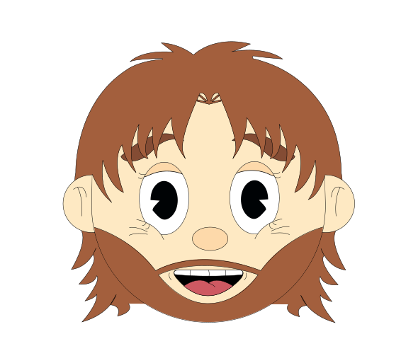
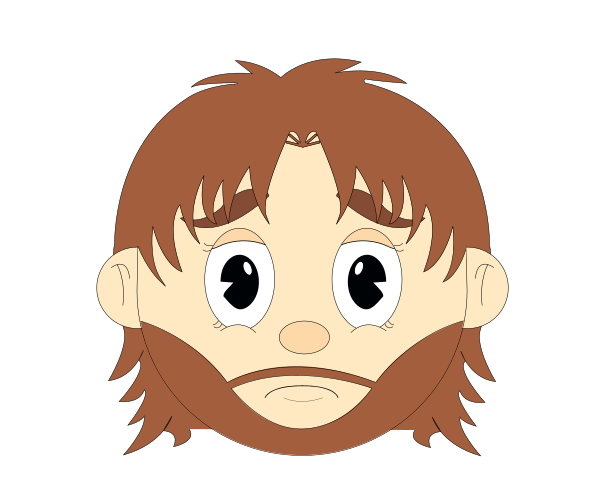
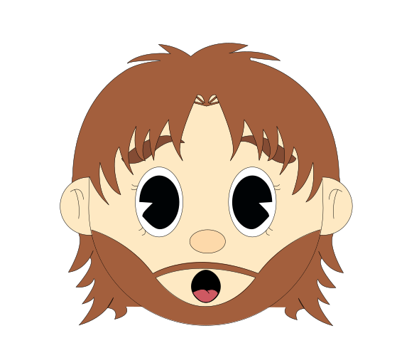
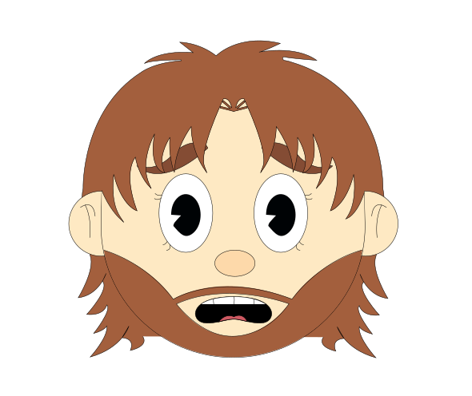
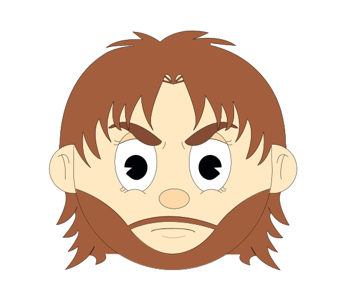
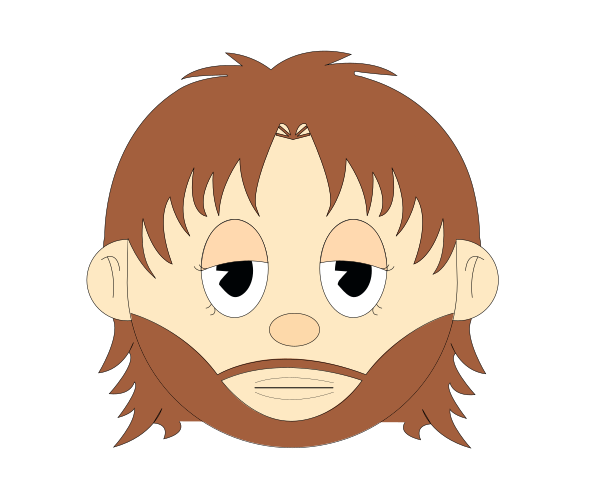

Grecia, región de Beocia. Allí se alza el Monte Helicón.
Edición especial El origen
El estudio detrás de Cuerdas del Destino
El origen de Helikón
Todo estudio tiene un número cero: el que cuenta de dónde viene el nombre, quién sostiene el lápiz y cómo se construye cada página. Este es el nuestro.
Capítulo único · El monte de las musas
Pegaso golpeó la roca con su casco…
…y brotó Hipocrene: quien bebía su agua recibía la inspiración de las nueve musas.
Siglos después, tres creadores buscaban un lugar donde nacieran historias. Tomaron su nombre.
HELIKÓN
No hacemos cómics: construimos experiencias.
Construimos historias que nacen del mito, se mueven con la música y se vuelven experiencia.
— Manifiesto Helikón
Quién es quién en Helikón
Fichas del directorio oficial del estudio. Sin retratos: el trabajo habla por ellos.
Gabriel Torres
- Oficio
- Dibujante y animador
- En el cómic
- Pone en movimiento lo que se dibuja: las escenas que corren dentro del televisor.
Brayhan Mosquera
- Oficio
- Dibujante
- En el cómic
- Da forma al mundo de la historia: sus personajes, sus gestos y sus escenarios.
Camilo Betancourt
- Oficio
- Programador
- En el cómic
- Convierte las páginas en experiencia: el televisor, sus canales y cada interacción del sitio.
Extras del taller
El material de detrás de cámaras que traen las ediciones de coleccionista.

Alegría
Tristeza
Asombro
Miedo
Enojo
Aburrimiento
- 1 Dibujo Los personajes se dibujan en vector, desde Illustrator.
- 2 Animación Cada escena cobra vida en After Effects.
- 3 Exportación La animación viaja a la web como Lottie, un archivo JSON.
- 4 Pantalla HTML, CSS y JavaScript la meten dentro del televisor.
- 2 capítulos
- 9 canales
- 5 personajes
- 30 expresiones
Expedientes del estudio
Caso 01
Construyendo el universo visual
Dos mundos en uno: el papel envejecido del cómic pulp de los años treinta para el estudio, y el turquesa del televisor para la historia que se lee dentro.
Caso 02
Del mito a la música: el guion
Un niño descubre la guitarra, su padre le enseña que se toca con el corazón y un Ente sin rostro aparece en cada crisis. El mito cambió la lira por las cuerdas.
Caso 03
Primeros trazos de ilustración
El book de personajes llegó en PDF y se convirtió en vectores: cinco figuras y treinta expresiones que, juntas, pesan menos que una sola foto del cómic.
Tablero de ideas
Identidad
Música colombiana
Conexión con las raíces
Memoria
Cultura viva
Cuerdas del Destino
Narrativas atractivas
Sentido de pertenencia
Raíces musicales
Ritmos que emocionan
Patrimonio cultural
Herencia
Nuevas generaciones
Identidad sonora
Experiencia digital
Nuestro universo
I
Descubre la historia de
Juanes
Abrir →
II
Enciende el
Cómic
Abrir →
III
Muy pronto
Próximo
capítulo ???
capítulo ???